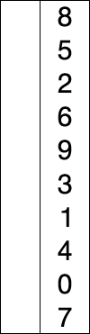

Этот алгоритм похож на сортировку пузырьком: он на каждой итерации отсортировывает один элемент, только собираются они не в конце массива, а в начале.
Его суть — за каждый проход по массиву выбрать минимальный элемент (для сортировки по возрастанию) и поменять его местами с первым элементом в еще не отсортированном участке массива, тем самым уменьшив длину этого участка на один, и так до тех пор пока не будут отсортированы все элементы.
Алгоритм также начинает с первого элемента массива и движется направо. Он сравнивает элементы попарно и отбирает минимальный из них. Найденный минимум меняется
местами с первым не отсортированным элементом в начале массива.
Этот подход хорошо виден на иллюстрации:

Пример кода:
const selectionSort = arr => {
for (let i = 0, l = arr.length, k = l - 1; i < k; i++) {
let indexMin = i;
for (let j = i + 1; j < l; j++) {
if (arr[indexMin] > arr[j]) {
indexMin = j;
}
}
if (indexMin !== i) {
[arr[i], arr[indexMin]] = [arr[indexMin], arr[i]];
}
}
return arr;
};
При переборке массива мы находим наименьшее число в несортированном списке. Если наименьшее число не является первым, меняем его на первый элемент несортированного массива.
Сложность:
В отличие от пузырьковой, сортировка выбором неустойчива, но сложность у нее такая же – O(N²).
Если у вас возникли трудности с понимаем работы алгоритма, можно посмотреть его визуализацию на видео: